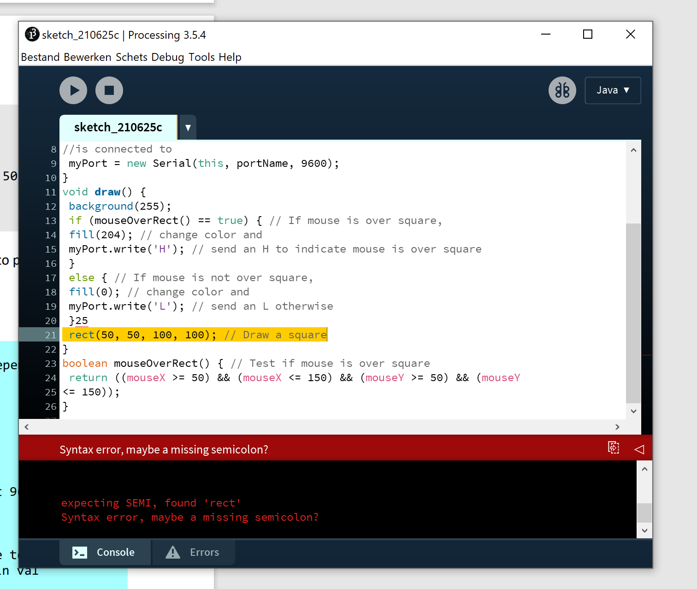

Computer Vision
Computer vision is een gebied in de IT wereld waarbij computers in staat zijnom beelden op dezelfde manier te zien als
hoe mensen dat doen. Een van de programma’s die helpt om data om te zetten in een menselijke visie is een programma genaamd
“Processing”. Processing is een open source programmeertaal dat lijkt op de programmeertaal Java voor mensen die interactieve
afbeeldingen en animaties willen programmeren.
Ik heb opdrachten gemaakt die mij kennis laat maken met de mogelijkheden van Processing en Computer Vision.
In totaal zijn er 5 maar er zijn alleen een aantal opgenomen voor deze portfolio website.
Daarbij zijn helaas niet alle opdrachten gelukt.
Klik hier om de opdrachten te bekijken
Portfolio -exercise 2F: Your first program‚úÖüòÑ
Met Processing heb ik 3 verschillende vormen gecodeerd in verschillende vormen en kleuren.
Portfolio-exercise 2I ‚Äì Your second program‚úÖüòÑ
Ik heb geleerd hoe ik lijnen kan maken dus de opdracht was om daarmeer minimaal 4 verschillende vormen mee te tekenen.
1. Een pijl
2.De letter A
3. Een driehoek
4. De letter P
Portfolio-exercise 2-O‚ùåüòï
Helaas was deze opdracht niet helemaal gelukt, ik snapte niet zo goed hoe
De opdracht was dat ik een code moest schtijven die minste twee verschillende vormen met verschillende kleuren en interactief
Portfolio-exercise 3B: Processing to Arduino‚ùåüò≠
In de Arduino pagina heb ike geëxperimenteerd met het sturen van Arduino output naar Processing. Dit kan ook andersom door data van Processing naar een Arduino te sturen, met een library die ik heb geinstaleerd.
Portfolio- Exercise 5C P5‚ùåüò≠
Helaas was deze opdracht niet helemaal gelukt, ik snapte niet zo wat de bedoeling was.
p5.js is een JavaScript-bibliotheek voor creatieve codering, met een focus op het toegankelijk en inclusief maken van codering voor kunstenaars, ontwerpers, docenten, beginners en iedereen! p5.js is gratis en open source omdat we vinden dat software en de tools om het te leren voor iedereen toegankelijk moeten zijn.
Nu ik weet wat p5 is ging ik de getting started opdracht doen die bij de introductie video was.